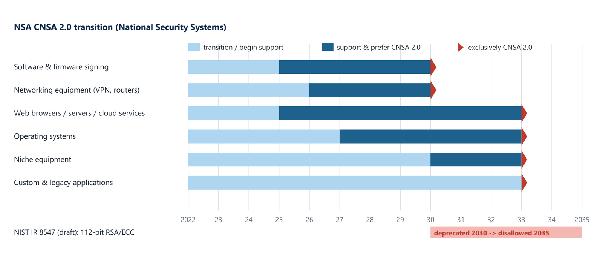

Chapter 12: The Post-Quantum Transition¶
A sufficiently large quantum computer would break RSA and elliptic-curve cryptography. For a data centre the immediate worry is not decryption but forgery: an attacker who can forge firmware signatures can load malicious firmware that every root of trust accepts. This chapter explains why roots of trust migrate first, the standards and timelines that drive the migration, the products that already support post-quantum algorithms, and the engineering issues of signing firmware with them.
12.1 Why roots of trust move first¶
Quantum computers capable of breaking RSA and ECC, "cryptographically relevant quantum computers", would let an attacker forge firmware signatures and decrypt recorded traffic. Roots of trust are the first place to migrate because a RoT's verification key is burned into silicon for a decade or more. Equipment bought now stays in service for many years, so every root of trust in it must be able to verify post-quantum signatures, or the fleet carries a weakness that no software update can remove.
12.2 Standards and timelines¶
NIST published FIPS 203 (ML-KEM), FIPS 204 (ML-DSA) and FIPS 205 (SLH-DSA) in August 2024, with the stateful hash-based signatures LMS and XMSS in SP 800-208. HQC was selected in 2025 as a backup key-encapsulation mechanism. The NSA's CNSA 2.0 sets the timeline for national-security systems, and NIST IR 8547 (draft) proposes deprecating 112-bit-security RSA and ECC by 2030 and disallowing them by 2035. Software and firmware signing is the first CNSA 2.0 milestone (prefer post-quantum by 2025, exclusively by 2030), and networking equipment follows. Figure 12.1 shows the transition by system category.

12.3 Products that verify post-quantum signatures¶
| Product or IP | Vendor | PQC capability |
|---|---|---|
| Caliptra 2.0 and 2.1 (Adams Bridge 1.0 and 2.0) | CHIPS Alliance (Microsoft-developed accelerator) | ML-DSA-87 firmware verification and attestation; ML-KEM-1024 (2.1); LMS |
| MachXO5-NX TDQ | Lattice | CNSA 2.0 compliant ML-DSA, ML-KEM, LMS, XMSS; crypto-agile FPGA RoT |
| TS1800 PRoT, TS50x | Microchip | Hardware-accelerated ML-DSA, LMS verify, ML-KEM |
| QS7001 | SEALSQ | ML-DSA-87, ML-KEM on a RISC-V secure MCU |
| Quantum Safe Engine; RT-600 | Rambus | ML-KEM, ML-DSA, LMS and XMSS acceleration in RoT |
| Agile PQC accelerators | Synopsys | Programmable PQC public-key accelerators for SoC RoTs |
| PQPlatform family | PQShield | Side-channel-protected ML-KEM, ML-DSA, SLH-DSA |
| KiviPQC; xQlave | CAST; Xiphera | ML-KEM and ML-DSA hardware cores |
| HPE iLO 7 (Gen12) | HPE | PQC-ready firmware signing chain |
| OpenTitan | lowRISC partners | SPHINCS+ (SLH-DSA) based secure boot option; OTBN programmable for PQC |
12.4 Engineering issues in signing firmware¶
Moving a firmware chain to post-quantum signatures raises problems that are worth knowing before you read a vendor's claim.
State management. Stateful hash-based signatures such as LMS and XMSS rely on one-time keys. Every server maker, BIOS vendor, BMC vendor and component maker that signs images with them must never reuse a one-time key, which means the signing state has to be tracked and protected, ideally enforced in hardware so that reuse is structurally impossible.
Hybrid operation. Every migration through the mid-2030s will be hybrid, keeping classical algorithms alongside the new ones (dual signatures, hybrid key exchange for TLS and IPsec offload, hybrid secure boot and SPDM attestation), so that a flaw in either family does not break the system.
Algorithm diversity. The standardised schemes are mostly lattice-based. HQC is code-based, so a secret wrapped with both ML-KEM and HQC stays protected even if a weakness is found in lattice cryptography. This matters most for keys that must stay secret for decades, such as archived model weights, backups and long-lived inter-site keys.
Size and speed. Post-quantum signatures are larger than classical ones. Compact schemes would shorten TLS handshakes and SPDM certificate chains over slow management buses, but a safe hardware implementation of the smallest-signature scheme depends on a constant-time sampler, which has delayed its standard.
Side channels. Open roots of trust have shipped lattice engines with limited side-channel protection, and published research in 2025 recovered an ML-DSA key from an open-source root of trust using power analysis. A team integrating a root of trust into a NIC, SSD controller or BMC needs a protected datapath.
Crypto inventory. The first two steps of every migration are to inventory the cryptography in use and to move firmware signing to post-quantum algorithms.
12.5 Summary¶
- Roots of trust migrate first because their verification keys are fixed in silicon for a decade or more, and forged firmware signatures would defeat every other control.
- FIPS 203, 204 and 205 (August 2024), SP 800-208 (LMS, XMSS), HQC (2025), CNSA 2.0 and NIST IR 8547 set the algorithms and dates.
- Caliptra 2.x, Lattice MachXO5-NX TDQ, Microchip TS1800, SEALSQ QS7001 and IP from Rambus, Synopsys, PQShield, CAST and Xiphera already verify post-quantum signatures.
- Engineering issues: state for hash-based signatures, hybrid operation, algorithm diversity, signature size, side channels and a crypto inventory.
12.6 Exercises¶
-
Why is a stolen firmware-signing key more worrying than decrypted traffic for a data-centre root of trust?
Answer
A forged signature lets an attacker install firmware that every root of trust accepts, giving control below the operating system and surviving reinstalls; decrypting recorded traffic reveals past data but does not give that control.
-
What must be guaranteed when signing firmware with LMS or XMSS?
Answer
Each one-time key must never be reused. The signing state must be tracked and protected, preferably enforced in hardware.
-
What is the benefit of wrapping a long-lived key with both ML-KEM and HQC?
Answer
They rest on different mathematical problems (lattices and codes), so the key stays protected even if a weakness is later found in one family.
-
According to NIST IR 8547 (draft), when would 112-bit RSA and ECC be deprecated and when disallowed?
Answer
Deprecated by 2030 and disallowed by 2035.